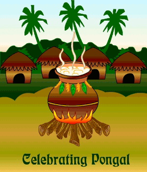

Pongal 
The Festival of South India

Surya Pongal – also called Suryan Pongal or Perum Pongal – is the second and main festive day, and is dedicated to the Hindu god Surya. It is the first day of the Tamil calendar month Tai, and coincides with Makara Sankranthi – a winter harvest festival celebrated throughout India. The day marks the start of the Uttarayana, when the sun enters the 10th house of the zodiac Makara (Capricorn). The day is celebrated with family and friends, with the Pongal dish prepared in a traditional earthen pot in an open space in the view of the sun.
Mattu Pongal is celebrated the day after Surya Pongal. Mattu refers to "cow, bullock, cattle", and Tamil Hindus regard cattle as sources of wealth for providing dairy products, fertilizer, transportation and agricultural aid. On Mattu Pongal, cattle are decorated – sometimes with flower garlands or painted horns, they are offered bananas, a special meal and worshipped. Other events during Pongal include community sports and games such as cattle race, the Jallikattu. The major cultural festivals on Pongal occur near Madurai.
Kanum Pongal, sometimes called the Kanya Pongal, the fourth day of the festival, marks the end of Pongal festivities for the year. The word kanum (kaanum) in this context means "to visit." Many families hold reunions on this day. Communities organize social events to strengthen mutual bonds. Villagers cut and consume farm fresh sugarcane during social gatherings. Relatives, friends and neighbors visit to greet, while youngsters go out to meet seniors among the relatives and neighborhoods to pay respects and seek blessings, while some elders give the visiting children some pocket change as a gift